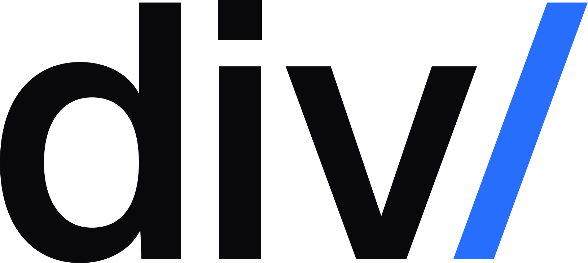
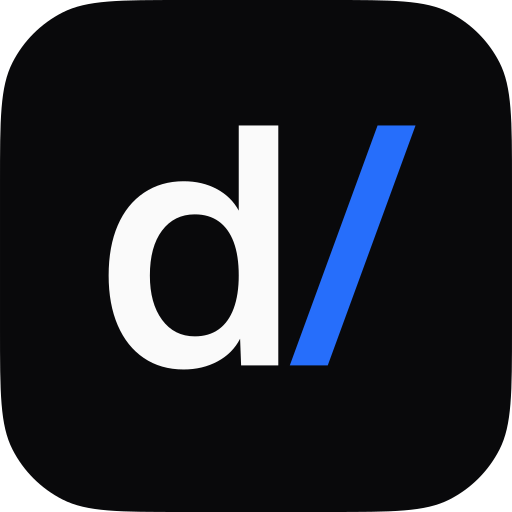
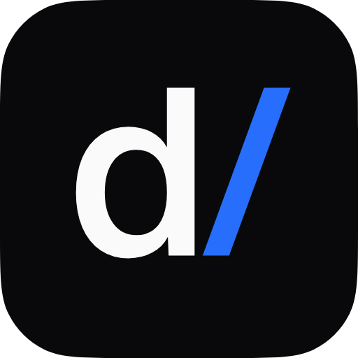
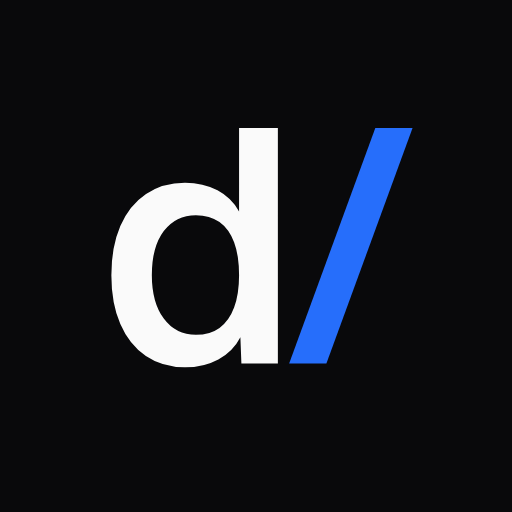
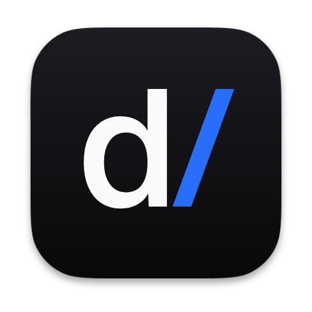
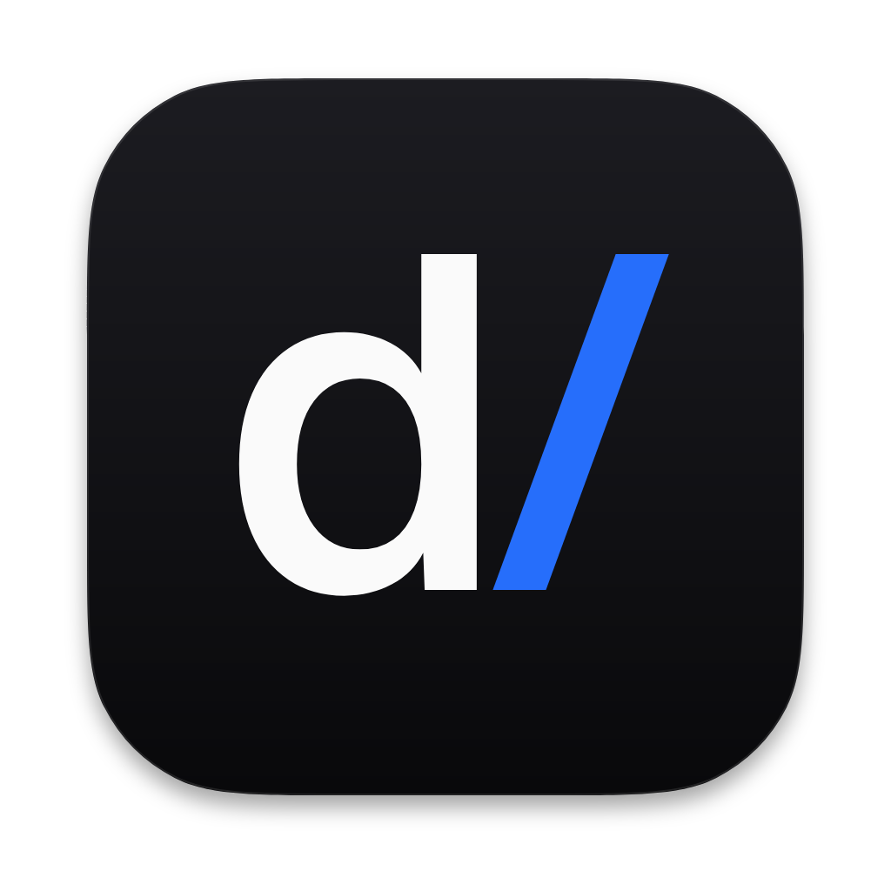
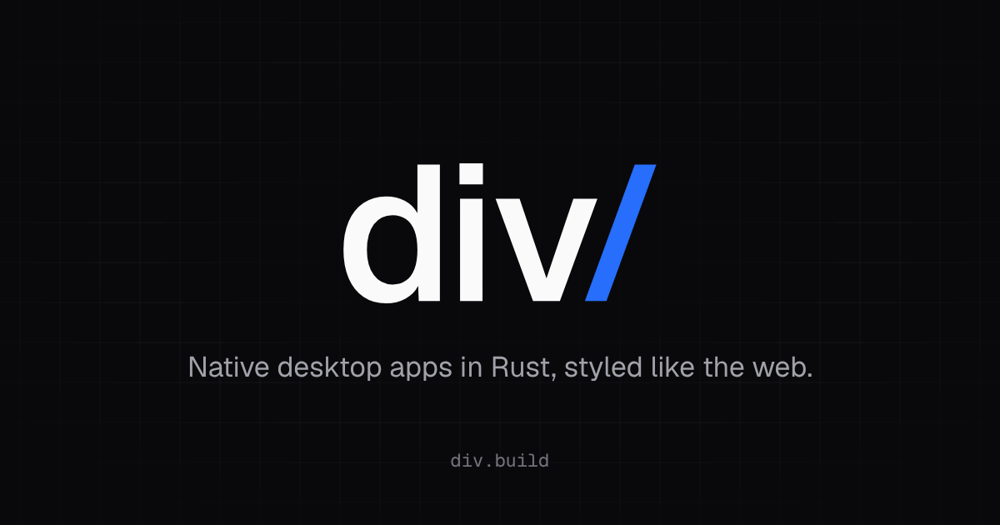

Logo review: direction D, "the slash"
Outlined from Geist at weight 550, with a drawn slash that runs parallel to the v's arm. Everything on this page is generated by brand/build.py. Open questions for you are at the end, under "Your call".
Wordmark

Small sizes
16 px is the smallest supported height for the wordmark on screen. Below that, use the icon.
Variants

Icons
| Asset | 16 | 32 | 64 | 180 |
|---|---|---|---|---|
| favicon.svg16 px grid fit | ||||
| favicon.ico16, 32, 48, each fitted to its grid | (48) | |||
| div-icon.svg, icon-192/512.pngmaster, PWA "any" |  |  | ||
| apple-touch-icon.png180, full bleed; iOS rounds it | ||||
| icon-maskable-192/512.pngPWA "maskable", full bleed |  | |||
| app-icon-512/1024.pngdesktop app, macOS grid with shadow |  |  |
16 px up close
Fitted to the pixel grid (left) against the master scaled down (right), both enlarged 8 times. The fitted version keeps a 2 px stem and bowl, 1 px between the d and the slash, and a slightly steeper slash so it fits. Verdict: d/ still reads at 16 px once fitted, so there is no separate simplified small mark.
Left to right: 16 px fitted, 16 px unfitted, 32 px fitted (enlarged 4 times).
Maskable safe zone
The dashed circle is the 80% safe zone; the mark stays inside it under any mask.
In context
Open Graph image

1200 × 630. The headline is the site's; the grid is faint on purpose and fades toward the centre.
Color
The slash is a graphic, so it needs 3:1 (WCAG 1.4.11). Div blue has the same contrast on white and on zinc-950, the most any single color can have against both, so one accent works on both backgrounds.
Clear space and minimum size
| Clear space | One x-height (the height of the v) on every side. |
| Wordmark | 16 px high on screen, 5 mm in print. |
| Icon | 16 px, using the grid-fitted favicon files below 64 px. |
Your call
Weight
550 sits between Medium and SemiBold. 500 is lighter and more elegant at display sizes, while 600 holds up better at 16 px.
Slash
Drawn, from the baseline to the top of the d, parallel to the v's right arm (20°), as thick as the stems (trimmed 4% for its length). Dropping it below the baseline reads more like a path separator but unsettles the baseline. Geist's own slash is shown for comparison.
Accent
One blue on both backgrounds, slightly brighter and more saturated than the site's blue-600, and much stronger than blue-400 on dark. If you would rather the slash glow a little more on dark, the third option lifts it one step.